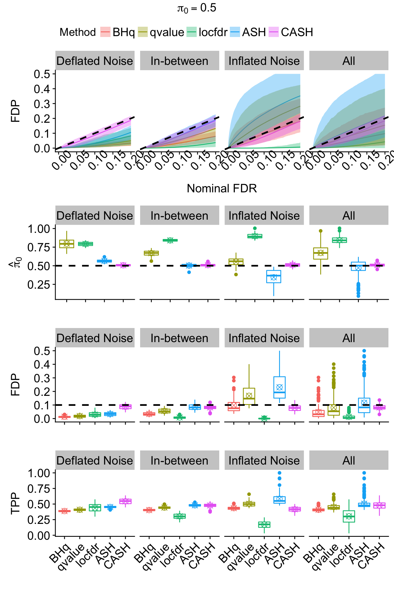
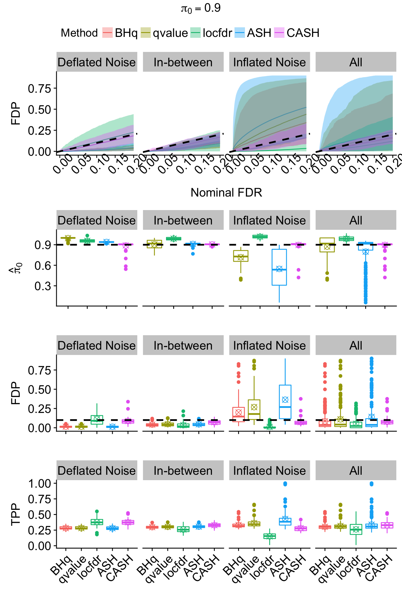
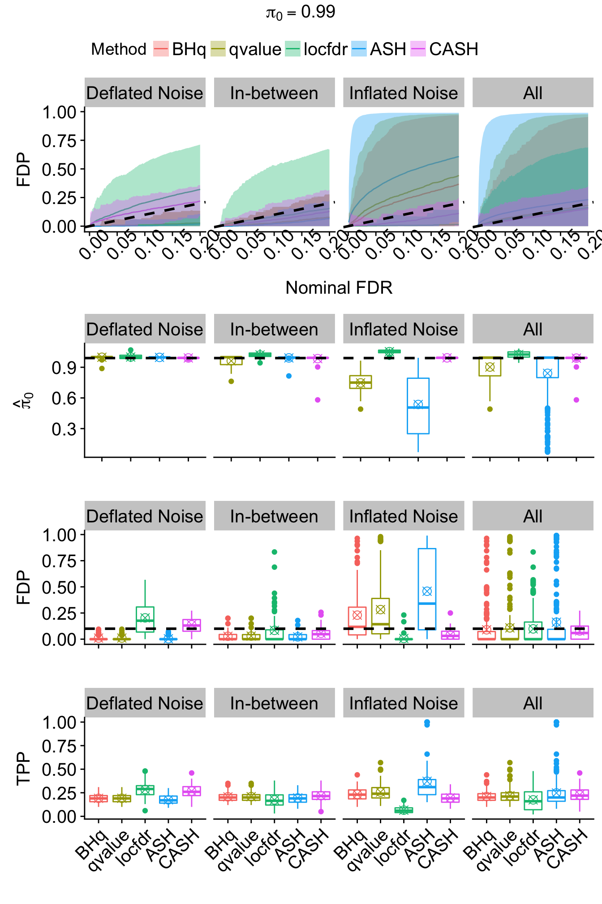

CASH SimulationsLast updated: 2018-05-13
workflowr checks: (Click a bullet for more information) ✔ R Markdown file: up-to-date
Great! Since the R Markdown file has been committed to the Git repository, you know the exact version of the code that produced these results.
✔ Environment: empty
Great job! The global environment was empty. Objects defined in the global environment can affect the analysis in your R Markdown file in unknown ways. For reproduciblity it’s best to always run the code in an empty environment.
✔ Seed:
set.seed(12345)
The command set.seed(12345) was run prior to running the code in the R Markdown file. Setting a seed ensures that any results that rely on randomness, e.g. subsampling or permutations, are reproducible.
✔ Session information: recorded
Great job! Recording the operating system, R version, and package versions is critical for reproducibility.
✔ Repository version: bdd32ee
wflow_publish or wflow_git_commit). workflowr only checks the R Markdown file, but you know if there are other scripts or data files that it depends on. Below is the status of the Git repository when the results were generated:
Ignored files:
Ignored: .DS_Store
Ignored: .Rhistory
Ignored: .Rproj.user/
Ignored: analysis/.DS_Store
Ignored: analysis/BH_robustness_cache/
Ignored: analysis/FDR_Null_cache/
Ignored: analysis/FDR_null_betahat_cache/
Ignored: analysis/Rmosek_cache/
Ignored: analysis/StepDown_cache/
Ignored: analysis/alternative2_cache/
Ignored: analysis/alternative_cache/
Ignored: analysis/ash_gd_cache/
Ignored: analysis/average_cor_gtex_2_cache/
Ignored: analysis/average_cor_gtex_cache/
Ignored: analysis/brca_cache/
Ignored: analysis/cash_deconv_cache/
Ignored: analysis/cash_fdr_1_cache/
Ignored: analysis/cash_fdr_2_cache/
Ignored: analysis/cash_fdr_3_cache/
Ignored: analysis/cash_fdr_4_cache/
Ignored: analysis/cash_fdr_5_cache/
Ignored: analysis/cash_fdr_6_cache/
Ignored: analysis/cash_plots_cache/
Ignored: analysis/cash_sim_1_cache/
Ignored: analysis/cash_sim_2_cache/
Ignored: analysis/cash_sim_3_cache/
Ignored: analysis/cash_sim_4_cache/
Ignored: analysis/cash_sim_5_cache/
Ignored: analysis/cash_sim_6_cache/
Ignored: analysis/cash_sim_7_cache/
Ignored: analysis/correlated_z_2_cache/
Ignored: analysis/correlated_z_3_cache/
Ignored: analysis/correlated_z_cache/
Ignored: analysis/create_null_cache/
Ignored: analysis/cutoff_null_cache/
Ignored: analysis/design_matrix_2_cache/
Ignored: analysis/design_matrix_cache/
Ignored: analysis/diagnostic_ash_cache/
Ignored: analysis/diagnostic_correlated_z_2_cache/
Ignored: analysis/diagnostic_correlated_z_3_cache/
Ignored: analysis/diagnostic_correlated_z_cache/
Ignored: analysis/diagnostic_plot_2_cache/
Ignored: analysis/diagnostic_plot_cache/
Ignored: analysis/efron_leukemia_cache/
Ignored: analysis/fitting_normal_cache/
Ignored: analysis/gaussian_derivatives_2_cache/
Ignored: analysis/gaussian_derivatives_3_cache/
Ignored: analysis/gaussian_derivatives_4_cache/
Ignored: analysis/gaussian_derivatives_5_cache/
Ignored: analysis/gaussian_derivatives_cache/
Ignored: analysis/gd-ash_cache/
Ignored: analysis/gd_delta_cache/
Ignored: analysis/gd_lik_2_cache/
Ignored: analysis/gd_lik_cache/
Ignored: analysis/gd_w_cache/
Ignored: analysis/knockoff_10_cache/
Ignored: analysis/knockoff_2_cache/
Ignored: analysis/knockoff_3_cache/
Ignored: analysis/knockoff_4_cache/
Ignored: analysis/knockoff_5_cache/
Ignored: analysis/knockoff_6_cache/
Ignored: analysis/knockoff_7_cache/
Ignored: analysis/knockoff_8_cache/
Ignored: analysis/knockoff_9_cache/
Ignored: analysis/knockoff_cache/
Ignored: analysis/knockoff_var_cache/
Ignored: analysis/marginal_z_alternative_cache/
Ignored: analysis/marginal_z_cache/
Ignored: analysis/mosek_reg_2_cache/
Ignored: analysis/mosek_reg_4_cache/
Ignored: analysis/mosek_reg_5_cache/
Ignored: analysis/mosek_reg_6_cache/
Ignored: analysis/mosek_reg_cache/
Ignored: analysis/pihat0_null_cache/
Ignored: analysis/plot_diagnostic_cache/
Ignored: analysis/poster_obayes17_cache/
Ignored: analysis/real_data_simulation_2_cache/
Ignored: analysis/real_data_simulation_3_cache/
Ignored: analysis/real_data_simulation_4_cache/
Ignored: analysis/real_data_simulation_5_cache/
Ignored: analysis/real_data_simulation_cache/
Ignored: analysis/rmosek_primal_dual_2_cache/
Ignored: analysis/rmosek_primal_dual_cache/
Ignored: analysis/seqgendiff_cache/
Ignored: analysis/simulated_correlated_null_2_cache/
Ignored: analysis/simulated_correlated_null_3_cache/
Ignored: analysis/simulated_correlated_null_cache/
Ignored: analysis/simulation_real_se_2_cache/
Ignored: analysis/simulation_real_se_cache/
Ignored: analysis/smemo_2_cache/
Ignored: data/LSI/
Ignored: docs/.DS_Store
Ignored: docs/figure/.DS_Store
Ignored: output/fig/
| File | Version | Author | Date | Message |
|---|---|---|---|---|
| rmd | bdd32ee | LSun | 2018-05-13 | wflow_publish(“analysis/cash_plots.rmd”) |
| rmd | ad80feb | Lei Sun | 2018-05-13 | plots |
| rmd | 42b59ae | LSun | 2018-05-13 | plot size |
| rmd | 9962d07 | Lei Sun | 2018-05-13 | plot size |
| rmd | 97317b4 | LSun | 2018-05-13 | cash_pi0 |
| rmd | 8ac1a07 | Lei Sun | 2018-05-12 | multiple pi0 |
| html | e05bc83 | LSun | 2018-05-12 | Update to 1.0 |
| rmd | cc0ab83 | Lei Sun | 2018-05-11 | update |
| html | 566a865 | LSun | 2018-05-09 | Build site. |
| rmd | f85ff3f | LSun | 2018-05-09 | wflow_publish(“analysis/cash_plots.rmd”) |
| html | 564f9cb | LSun | 2018-05-06 | Build site. |
| rmd | 797cd69 | LSun | 2018-05-06 | wflow_publish(“analysis/cash_plots.rmd”) |
| html | 4093362 | LSun | 2018-04-27 | Build site. |
| html | 37ad456 | LSun | 2018-04-27 | Build site. |
| rmd | 8c99563 | LSun | 2018-04-27 | wflow_publish(“analysis/cash_plots.rmd”) |
| rmd | 434b541 | Lei Sun | 2018-04-13 | FDP q |
| html | 7e7b2d1 | LSun | 2018-04-12 | Build site. |
| rmd | 3a1e4cc | LSun | 2018-04-12 | wflow_publish(“analysis/cash_plots.rmd”) |
| html | d022714 | LSun | 2018-02-22 | cash |
| rmd | e94c1d3 | LSun | 2018-02-22 | cash plots |
| html | 8983492 | LSun | 2018-02-21 | Build site. |
| rmd | 5902dc9 | LSun | 2018-02-21 | wflow_publish(“~/GitHub/truncash/analysis/cash_plots.rmd”) |
| rmd | 48787a2 | Lei Sun | 2018-02-16 | cash plots |
| rmd | ff78840 | LSun | 2018-02-16 | cash_plots |
| html | e4ecc94 | LSun | 2018-02-16 | Build site. |
| rmd | 2898ce9 | LSun | 2018-02-16 | wflow_publish(“analysis/cash_plots.rmd”) |
| html | 7c34000 | LSun | 2018-02-15 | Build site. |
| rmd | cc05dc7 | LSun | 2018-02-15 | wflow_publish(“analysis/cash_plots.rmd”) |
| rmd | 4d857f7 | Lei Sun | 2018-02-14 | plots |
| html | f6f0ca0 | LSun | 2018-02-14 | Build site. |
| rmd | 3af89d2 | LSun | 2018-02-14 | wflow_publish(“analysis/cash_plots.rmd”) |
| rmd | d2473f1 | Lei Sun | 2018-02-14 | cash_plots |
| html | d2473f1 | Lei Sun | 2018-02-14 | cash_plots |
source("../code/gdfit.R")
source("../code/gdash_lik.R")
source("../code/count_to_summary.R")
library(ashr)
library(locfdr)
library(qvalue)
library(reshape2)
library(ggplot2)
library(grid)
library(gridExtra)
library(RColorBrewer)
library(scales)
library(cowplot)
library(ggpubr)mean_sdp <- function (x) {
m <- mean(x)
ymax <- m + sd(x)
return(c(y = m, ymax = ymax, ymin = m))
}
mad.mean <- function (x) {
return(mean(abs(x - median(x))))
}
FDP <- function (FDR, qvalue, beta) {
return(sum(qvalue <= FDR & beta == 0) / max(sum(qvalue <= FDR), 1))
}
pFDP <- function (FDR, qvalue, beta) {
return(sum(qvalue <= FDR & beta == 0) / sum(qvalue <= FDR))
}
power <- function (FDR, qvalue, beta) {
return(sum(qvalue <= FDR & beta != 0) / sum(beta != 0))
}r <- readRDS("../data/liver.rds")top_genes_index = function (g, X) {
return(order(rowSums(X), decreasing = TRUE)[1 : g])
}
lcpm = function (r) {
R = colSums(r)
t(log2(((t(r) + 0.5) / (R + 1)) * 10^6))
}nsamp <- 5
ngene <- 1e4
pi0.vec <- c(0.5, 0.9, 0.99)Y = lcpm(r)
subset = top_genes_index(ngene, Y)
r = r[subset,]q.vec <- seq(0.001, 0.20, by = 0.001)
method.name <- c("BHq", "qvalue", "locfdr", "ASH", "CASH")FDP.array <- pFDP.array <- power.array <- array(0, dim = c(nsim, length(q.vec), length(method.name), length(pi0.vec)))
FDP.summary <- array(0, dim = c(7, length(q.vec), length(method.name), length(pi0.vec)))
pFDP.summary <- power.summary <- array(0, dim = c(5, length(q.vec), length(method.name), length(pi0.vec)))
for (j in seq(length(pi0.vec))) {
for (k in seq(length(method.name))) {
for (i in seq(nsim)) {
FDP.array[i, , k, j] <- sapply(q.vec, FDP, qvalue = qvalue.pi0.list[[j]][[i]][, k], beta = beta.pi0.list[[j]][[i]])
pFDP.array[i, , k, j] <- sapply(q.vec, pFDP, qvalue = qvalue.pi0.list[[j]][[i]][, k], beta = beta.pi0.list[[j]][[i]])
power.array[i, , k, j] <- sapply(q.vec, power, qvalue = qvalue.pi0.list[[j]][[i]][, k], beta = beta.pi0.list[[j]][[i]])
}
FDP.summary[, , k, j] <- rbind(
avg <- colMeans(FDP.array[, , k, j], na.rm = TRUE),
sd <- apply(FDP.array[, , k, j], 2, sd, na.rm = TRUE),
n <- colSums(!is.na(FDP.array[, , k, j])),
q975 <- apply(FDP.array[, , k, j], 2, quantile, probs = 0.975, na.rm = TRUE),
q025 <- apply(FDP.array[, , k, j], 2, quantile, probs = 0.025, na.rm = TRUE),
q750 <- apply(FDP.array[, , k, j], 2, quantile, probs = 0.75, na.rm = TRUE),
q250 <- apply(FDP.array[, , k, j], 2, quantile, probs = 0.25, na.rm = TRUE)
)
pFDP.summary[, , k, j] <- rbind(
avg <- colMeans(pFDP.array[, , k, j], na.rm = TRUE),
sd <- apply(pFDP.array[, , k, j], 2, sd, na.rm = TRUE),
n <- colSums(!is.na(pFDP.array[, , k, j])),
q975 <- apply(pFDP.array[, , k, j], 2, quantile, probs = 0.975, na.rm = TRUE),
q025 <- apply(pFDP.array[, , k, j], 2, quantile, probs = 0.025, na.rm = TRUE)
)
power.summary[, , k, j] <- rbind(
avg <- colMeans(power.array[, , k, j], na.rm = TRUE),
sd <- apply(power.array[, , k, j], 2, sd, na.rm = TRUE),
n <- colSums(!is.na(power.array[, , k, j])),
q975 <- apply(power.array[, , k, j], 2, quantile, probs = 0.975, na.rm = TRUE),
q025 <- apply(power.array[, , k, j], 2, quantile, probs = 0.025, na.rm = TRUE)
)
}
}q <- 0.1
z.over <- 1.05
z.under <- 0.95
method.col <- scales::hue_pal()(5)
# method.col <- c("#377eb8", "#984ea3", "#4daf4a", "#ff7f00", "#e41a1c")for (j in seq(length(pi0.vec))) {
sd.z <- sapply(z.pi0.list[[j]], sd)
Noise <- cut(sd.z, breaks = c(0, quantile(sd.z, probs = 1 : 2 / 3), Inf), labels = c("Deflated Noise", "In-between", "Inflated Noise"))
# Noise <- cut(sd.z, breaks = c(0, z.under, z.over, Inf), labels = c("Deflated Noise", "In-between", "Inflated Noise"))
pi0.pi0 <- matrix(unlist(pi0.pi0.list[[j]]), byrow = TRUE, length(pi0.pi0.list[[j]]))
pi0.pi0.noise <- rbind.data.frame(cbind.data.frame(Noise, pi0.pi0), cbind.data.frame(Noise = rep("All", length(Noise)), pi0.pi0))
pi0.plot <- ggplot(data = melt(pi0.pi0.noise, id.vars = "Noise"), aes(x = variable, y = value, col = variable)) +
geom_boxplot() +
stat_summary(fun.y = mean, geom = "point", shape = 13, size = 3) +
scale_color_manual(values = method.col[-1]) +
facet_wrap(~Noise, nrow = 1, ncol = 4) +
geom_hline(yintercept = pi0.vec[j], col = "black", linetype = "dashed", size = 1) +
scale_x_discrete(labels = method.name[-1]) +
labs(x = "", y = expression(hat(pi)[0])) +
theme(legend.position = "none", plot.title = element_text(hjust = 0.5, size = 15), axis.title.y = element_text(size = 15), axis.text.x = element_text(size = 15, angle = 45, hjust = 1), axis.text.y = element_text(size = 15), strip.text = element_text(size = 15))
FDP.summary.pi0 <- aperm(FDP.summary[, , , j], c(2, 1, 3))
FDP.summary.pi0.method <- FDP.summary.pi0[, , 1]
for (kk in 2 : length(method.name)) {
FDP.summary.pi0.method <- rbind.data.frame(FDP.summary.pi0.method, FDP.summary.pi0[, , kk])
}
FDP.summary.pi0.method <- cbind.data.frame(
rep(factor(seq(method.name)), each = dim(FDP.summary.pi0)[1]),
rep(q.vec, length(method.name)),
FDP.summary.pi0.method
)
colnames(FDP.summary.pi0.method) <- c(
"Method", "FDR", "FDP", "sd", "n", "q975", "q025", "q750", "q250"
)
FDP.array.pi0 <- aperm(FDP.array[, , , j], c(2, 1, 3))
FDP.pi0.noise <- as.vector(aperm(apply(FDP.array.pi0, c(1, 3), tapply, Noise, mean, na.rm = TRUE), c(2, 1, 3)))
sd.pi0.noise <- as.vector(aperm(apply(FDP.array.pi0, c(1, 3), tapply, Noise, sd, na.rm = TRUE), c(2, 1, 3)))
n.pi0.noise <- as.vector(aperm(apply(FDP.array.pi0, c(1, 3), tapply, Noise, function(x){sum(!is.na(x))}), c(2, 1, 3)))
q975.pi0.noise <- as.vector(aperm(apply(FDP.array.pi0, c(1, 3), tapply, Noise, quantile, probs = 0.975, na.rm = TRUE), c(2, 1, 3)))
q025.pi0.noise <- as.vector(aperm(apply(FDP.array.pi0, c(1, 3), tapply, Noise, quantile, probs = 0.025, na.rm = TRUE), c(2, 1, 3)))
q750.pi0.noise <- as.vector(aperm(apply(FDP.array.pi0, c(1, 3), tapply, Noise, quantile, probs = 0.75, na.rm = TRUE), c(2, 1, 3)))
q250.pi0.noise <- as.vector(aperm(apply(FDP.array.pi0, c(1, 3), tapply, Noise, quantile, probs = 0.25, na.rm = TRUE), c(2, 1, 3)))
FDP.summary.pi0.method.noise <- cbind.data.frame(
rep(rep(levels(Noise), each = length(q.vec)), length(method.name)),
rep(factor(seq(method.name)), each = length(levels(Noise)) * length(q.vec)),
rep(q.vec, length(levels(Noise)) * length(method.name)),
FDP.pi0.noise,
sd.pi0.noise,
n.pi0.noise,
q975.pi0.noise,
q025.pi0.noise,
q750.pi0.noise,
q250.pi0.noise
)
colnames(FDP.summary.pi0.method.noise) <- c(
"Noise", "Method", "FDR", "FDP", "sd", "n", "q975", "q025", "q750", "q250"
)
FDP.summary.pi0.method.noise <- rbind.data.frame(
FDP.summary.pi0.method.noise,
cbind.data.frame(Noise = rep("All", dim(FDP.summary.pi0.method)[1]), FDP.summary.pi0.method)
)
FDR.calib.plot <- ggplot(data = FDP.summary.pi0.method.noise, aes(x = FDR, y = FDP, group = Method, col = Method)) +
geom_line() +
geom_ribbon(aes(ymin = q025, ymax = q975, fill = Method), alpha = 0.35, linetype = "blank") +
scale_color_manual(labels = method.name, values = method.col) +
scale_fill_manual(labels = method.name, values = method.col) +
facet_wrap(~Noise, nrow = 1, ncol = 4) +
geom_abline(slope = 1, intercept = 0, linetype = "dashed", size = 1, col = "black") +
labs(x = "Nominal FDR", y = "FDP") +
theme(legend.position = "top", legend.text = element_text(size = 15), plot.title = element_text(hjust = 0.5, size = 15), axis.title.x = element_text(size = 15), axis.title.y = element_text(size = 15), axis.text.x = element_text(angle = 45, size = 15), axis.text.y = element_text(size = 15), strip.text = element_text(size = 15))
FDP.q <- FDP.array[, which(round(q.vec, 4) == q), , j]
FDP.q.noise <- rbind.data.frame(cbind.data.frame(Noise, FDP.q), cbind.data.frame(Noise = rep("All", length(Noise)), FDP.q))
FDR.plot <- ggplot(data = melt(FDP.q.noise, id.vars = "Noise"), aes(x = variable, y = value, col = variable)) +
geom_boxplot() +
stat_summary(fun.y = mean, geom = "point", shape = 13, size = 3) +
scale_color_manual(values = method.col) +
facet_wrap(~Noise, nrow = 1, ncol = 4) +
geom_hline(yintercept = q, col = "black", linetype = "dashed", size = 1) +
scale_x_discrete(labels = method.name) +
labs(x = "", y = "FDP") +
theme(legend.position = "none", plot.title = element_text(hjust = 0.5, size = 15), axis.title.y = element_text(size = 15), axis.text.x = element_text(size = 15, angle = 45, hjust = 1), axis.text.y = element_text(size = 15), strip.text = element_text(size = 15))
TDP.q <- power.array[, which(round(q.vec, 4) == q), , j]
TDP.q.noise <- rbind.data.frame(cbind.data.frame(Noise, TDP.q), cbind.data.frame(Noise = rep("All", length(Noise)), TDP.q))
power.plot <- ggplot(data = melt(TDP.q.noise, id.vars = "Noise"), aes(x = variable, y = value, col = variable)) +
geom_boxplot() +
stat_summary(fun.y = mean, geom = "point", shape = 13, size = 3) +
scale_color_manual(values = method.col) +
facet_wrap(~Noise, nrow = 1, ncol = 4) +
scale_x_discrete(labels = method.name) +
labs(x = "", y = "TPP") +
theme(legend.position = "none", plot.title = element_text(hjust = 0.5, size = 15), axis.title.y = element_text(size = 15), axis.text.x = element_text(size = 15, angle = 45, hjust = 1), axis.text.y = element_text(size = 15), strip.text = element_text(size = 15))
joint <- ggarrange(FDR.calib.plot,
pi0.plot + rremove("x.text"),
FDR.plot + rremove("x.text"),
power.plot,
align = "v", ncol = 1, nrow = 4,
heights = c(1.5, 1, 1, 1.2)
)
joint <- annotate_figure(joint,
top = text_grob(bquote(pi[0] == .(pi0.vec[j])), size = 15)
)
print(joint)
ggsave(paste0("../output/fig/pi0_", pi0.vec[j], ".pdf"), joint, height = 10, width = 8)
}
sessionInfo()R version 3.4.3 (2017-11-30)
Platform: x86_64-apple-darwin15.6.0 (64-bit)
Running under: macOS High Sierra 10.13.4
Matrix products: default
BLAS: /Library/Frameworks/R.framework/Versions/3.4/Resources/lib/libRblas.0.dylib
LAPACK: /Library/Frameworks/R.framework/Versions/3.4/Resources/lib/libRlapack.dylib
locale:
[1] en_US.UTF-8/en_US.UTF-8/en_US.UTF-8/C/en_US.UTF-8/en_US.UTF-8
attached base packages:
[1] grid stats graphics grDevices utils datasets methods
[8] base
other attached packages:
[1] ggpubr_0.1.6 magrittr_1.5 cowplot_0.9.2
[4] scales_0.5.0 RColorBrewer_1.1-2 gridExtra_2.3
[7] ggplot2_2.2.1 reshape2_1.4.3 qvalue_2.10.0
[10] locfdr_1.1-8 ashr_2.2-2 Rmosek_8.0.69
[13] CVXR_0.95 REBayes_1.2 Matrix_1.2-12
[16] SQUAREM_2017.10-1 EQL_1.0-0 ttutils_1.0-1
[19] PolynomF_1.0-1
loaded via a namespace (and not attached):
[1] purrr_0.2.4 splines_3.4.3 lattice_0.20-35
[4] colorspace_1.3-2 htmltools_0.3.6 yaml_2.1.18
[7] gmp_0.5-13.1 rlang_0.1.6 R.oo_1.21.0
[10] pillar_1.0.1 glue_1.2.0 Rmpfr_0.6-1
[13] R.utils_2.6.0 bit64_0.9-7 bindrcpp_0.2
[16] bindr_0.1 scs_1.1-1 foreach_1.4.4
[19] plyr_1.8.4 stringr_1.3.0 munsell_0.4.3
[22] gtable_0.2.0 workflowr_1.0.1 R.methodsS3_1.7.1
[25] codetools_0.2-15 evaluate_0.10.1 labeling_0.3
[28] knitr_1.20 doParallel_1.0.11 pscl_1.5.2
[31] parallel_3.4.3 Rcpp_0.12.16 backports_1.1.2
[34] truncnorm_1.0-7 bit_1.1-12 digest_0.6.15
[37] stringi_1.1.6 dplyr_0.7.4 rprojroot_1.3-2
[40] ECOSolveR_0.4 tools_3.4.3 lazyeval_0.2.1
[43] tibble_1.4.1 pkgconfig_2.0.1 whisker_0.3-2
[46] MASS_7.3-47 assertthat_0.2.0 rmarkdown_1.9
[49] iterators_1.0.9 R6_2.2.2 git2r_0.21.0
[52] compiler_3.4.3
This reproducible R Markdown analysis was created with workflowr 1.0.1